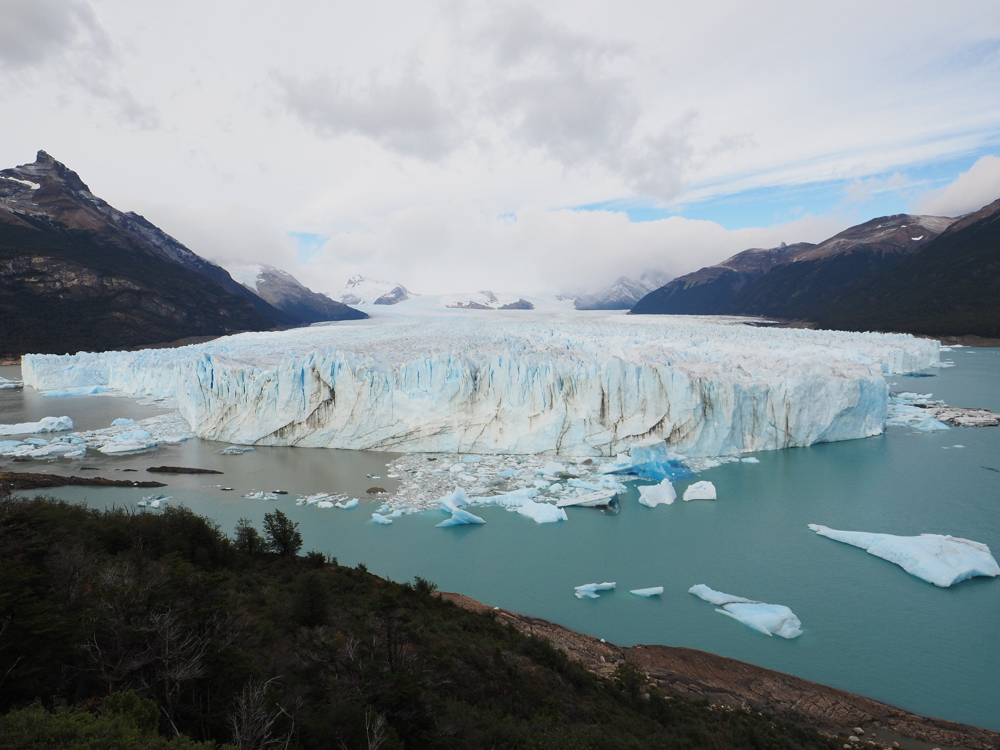
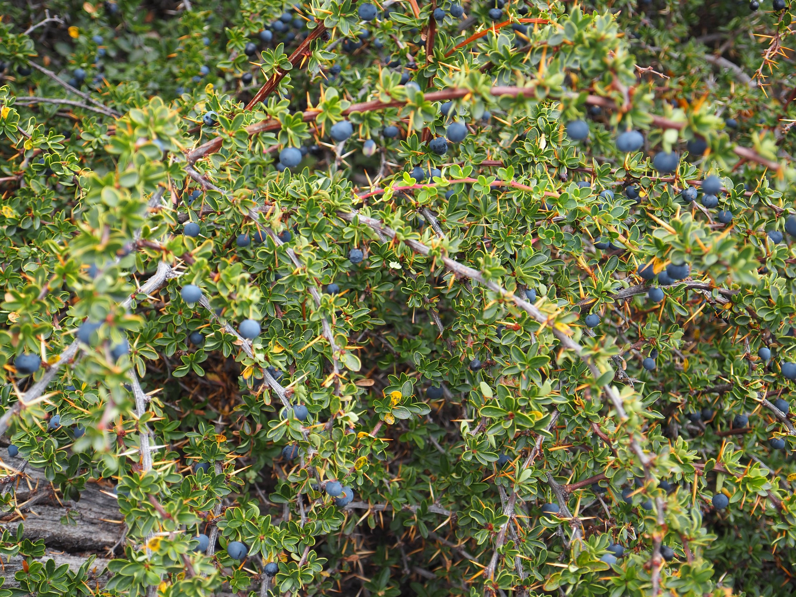
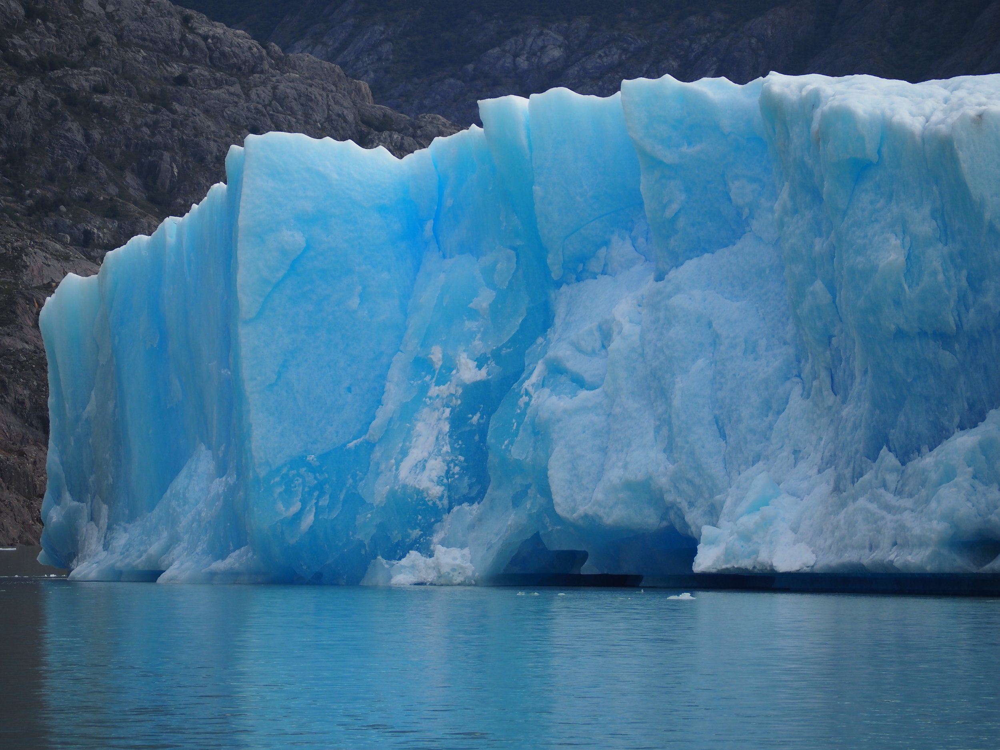
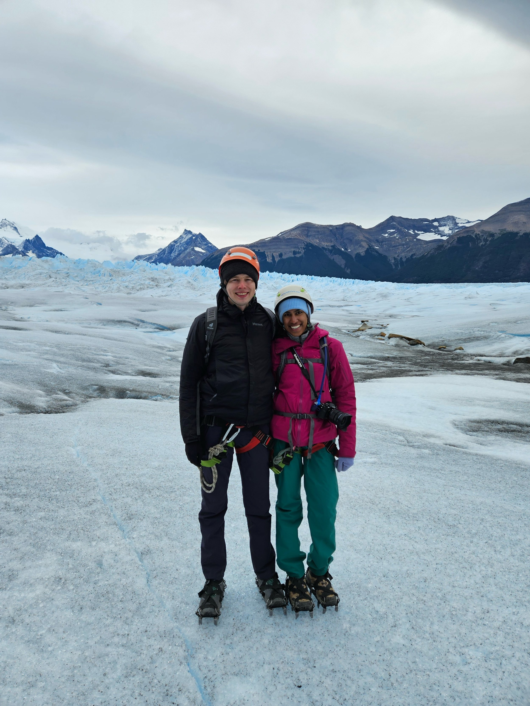
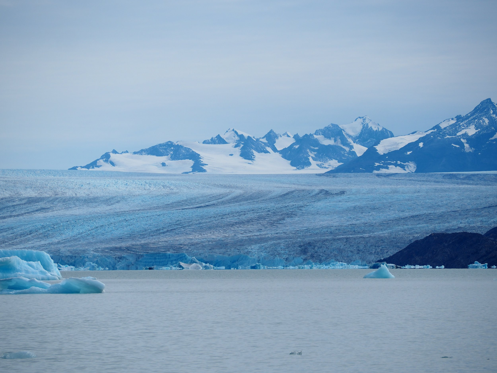
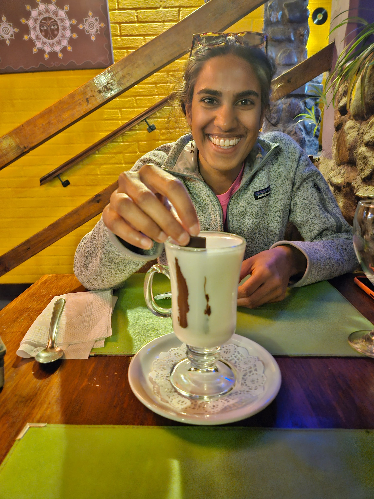

After a six and a half hour bus ride (of which only four and a half were really on the road.. three stops were taken for a bathroom break, border control to exit Argentina, and border+customs to enter Chile) we’ve arrived in Puerto Natales from El Calafate. We’re at a really lovely hostel here with two wonderful dogs preparing for the O trek which we’ll start the day after tomorrow. I figured I’d try to get a quick update done on El Calafate tonight.
>

El Calafate is named for a berry plant, the Calafate, that grows readily in Patagonia. It produces tiny dark blue berries that we picked and ate much of throughout our trip. It’s quite bitter if you eat an unripe one, but we learned from our ice trekking guide that if the stem is red and the berry is shiny, it’s ripe and then it tastes sweet. This was correct but sometimes I was too impatient to search for those red stems while hiking and chucked the unripe ones into my mouth anyways. Legend has it that if you eat Calafate berries, you will come back to Patagonia again; I wonder how many you have to eat because with the quantity I ate, I should be back another 50 times I’d guess.
>

Though perhaps more than berries, El Calafate is really known for their glaciers. We visited Parque Nacional Los Glaciares once by foot and once by boat. This was my first time seeing a glacier and it was really an extraordinary experience. The sound the glaciers make while cracking is incredible; the closest sounds I can compare it to is avalanche control at ski resorts or thunder. The sheer size and volume of the glaciers astounded me; at one point we were trekking on the glacier that was 300 meters in depth. The color and texture of the glaciers were unbelievably gorgeous and varied; some parts of the glacier were a stunning deep blue and there were large swaths of the glaciers that looked like a sea of spikes.
>

The highlight of our trip was the Big Ice excursion of the Perito Moreno glacier. As part of the excursion, we got to be the first ones at the national park, getting quiet, crowd less time to hear and see the glacier, got to hike through a forest to get to the middle area of the glacier which provided stunning new views of Perito Moreno and got to trek on the glacier with some incredible guides who pointed out cool features of the glacier along the way. We even ate our lunch on the ice! We got extremely lucky with the weather as usually it’s quite windy (sometimes 90 kph winds!), but this day, it was mostly blue skies with views of mountains that feed the glacier and calm winds. Our guides were extremely knowledgeable as well; one of the guides apparently guides Big Ice during the summer and heads to Bariloche during the winter time for skiing. This was my first time using crampons which weren’t as heavy as I thought they would be.
>

We had a second visit to the glaciers though with much less physical effort: by taking a boat tour. This gave us an opportunity to see some other glaciers: Upsala and Spegazzini being two of the highlights. It was cool to see some hanging glaciers and we saw an avalanche happen on a mountain (from a distance) as well. Sadly, many of the glaciers in this area are now retreating, that is growing smaller in area over time. Up until 2020, Perito Moreno used to be a glacier that was in “equilibrium” which means that its overall size remained the same on average but rising temperatures has changed that.
>

We had another fairly relaxed day in El Calafate where we did some horseback riding in the nearby grasslands and did some more planning for where to go after the O trek. We’re thinking about doing a road trip from Bariloche, where we will be after El Chaltén. It was a beautiful, warm sunny day in El Calafate and we enjoyed strolling along the lake while wearing shorts… haven’t done that since Buenos Aires which feels like ages ago!
>

Before wrapping up, I have to mention the stray dogs in El Calafate. Never before have I seen such happy, taken care of stray dogs anywhere before. They totally cracked us up: the dogs would look out for cars coming by and get ready on their hind legs. Then when the car was aligned with the dog, it would launch itself forward and try to run after the car. Of course, the car would inevitably be far ahead within a few seconds so the dog would give up and wait for the next car and do it all over again. These lovely buffoons would also pick smack in the middle of the sidewalk as their preferred location to nap once they had enough car chasing.
>

That’s all for now. Hopefully the weather continues to be good to us!
Favorites:
-
Big Ice: we really loved this excursion and thought the extra time, cost, and energy to do the Big Ice over Minitrekking was absolutely worth it.
-
Veggies Patagonico: we got one of their lava cookies during the Big Ice trek and IT WAS SO YUMMY! It was the perfect snack for trekking and lucky for us, the bakery was very close to our Airbnb and we bought 13 cookies. 12 are getting saved for the O trek. Hopefully I don’t sneak one too early.
An avalanche feeding a hanging glacier!